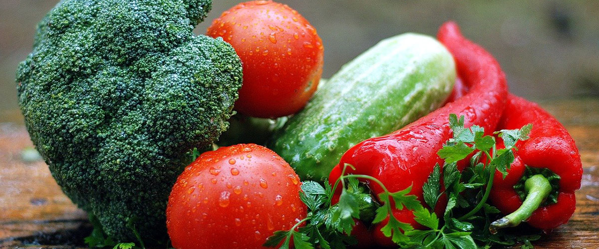

Unsere Küche
Ohne Zweifel einer der größten Vergnügen der Menschheit ist leckeres Essen und der Geschmack von Lebensmitteln in Prizren wird hergestellt aus das gebratene Fleisch und das anmutige Wasser in a Tabelle. Dieses köstliche Essen in diesem besonderen Stadt ist ein Produkt langjähriger Erfahrung, die wird von einer Generation zur nächsten vererbt. Die Vorbereitung beinhaltet nichts anderes als die Tradition. Während der Vorbereitung von Bei diesen Mahlzeiten ist das Kochen aber einfach und gemütlich mit Erfahrung. Zur Zubereitung von Speisen lokale Chefs haben genug Erfahrung geschaffen verbunden mit einer langen Tradition und Moderne heute gestärkt. Prizren ist bekannt für die Teigprodukte, unter denen hervorstechen: Pogaqa, Toplia, Pitajka, Pitja (Kuchen) und Flija. Prizrens traditionelle Gerichte bilden die Essenz der Prizren Küche. Qervish mit Frikadellen, Paprika mit Hüttenkäse, Auflauf Prizren, Dolmas, Musaka, Sarma, Bohnen, Gulasch, Burjan mit treffen, Elbasan Auflauf sind einige der bekanntesten Gerichte von Prizren. Außerdem kultiviert Prizren eine bestimmte Anzahl von Süßigkeiten, unter denen, sheqerpare, tespishte, Baklava, Sutliash, Tullumba und Havlla sind die die meisten Favoriten.
Einige der Prizren-Gerichte:
Tortenteig (Folie), Butter, Fleisch, Spinat, Quark, Kohl.
Tavë Prizreni (Prizren-Auflauf) Fleisch, Zwiebeln, Paprika, Tomaten, Okra, schwarze Auberginen, Zucchini, Karotten.
Paqa Mehl, Wasser, Butter, Fleischnuggets.
Sarma Hackfleisch, Reis, Kohl oder Trauben Blätter.
Tespishte Mehl, Zucker, Butter, Nüsse, Wasser.